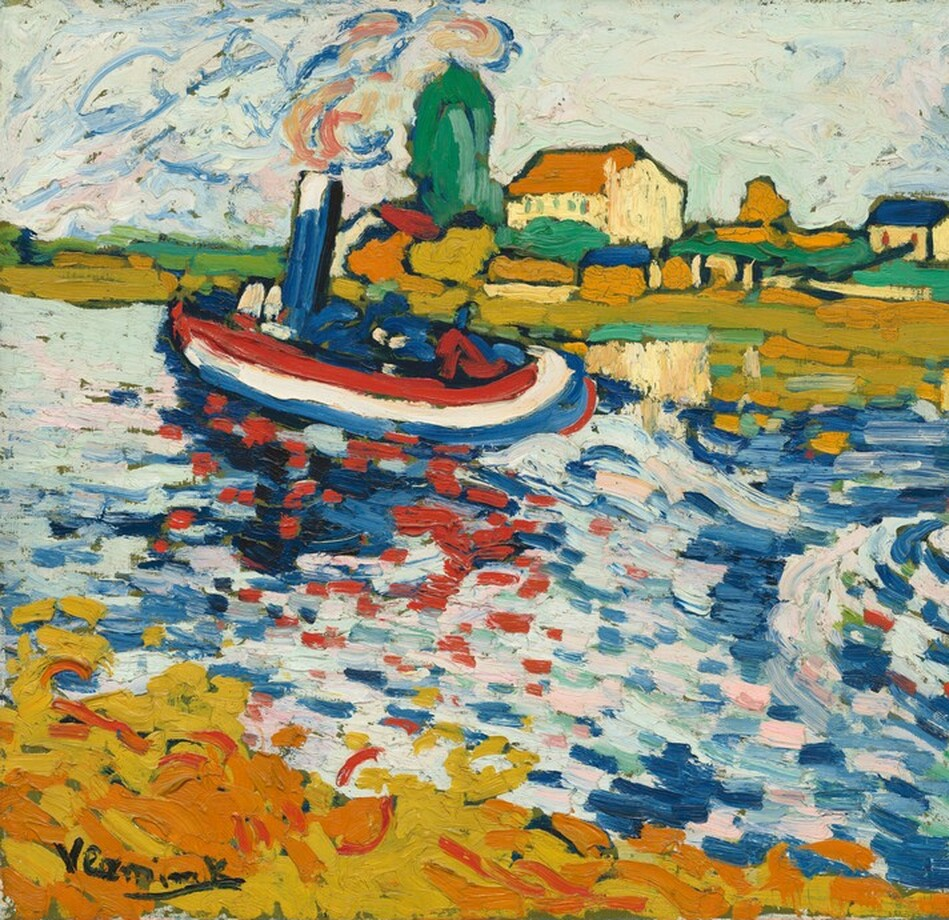
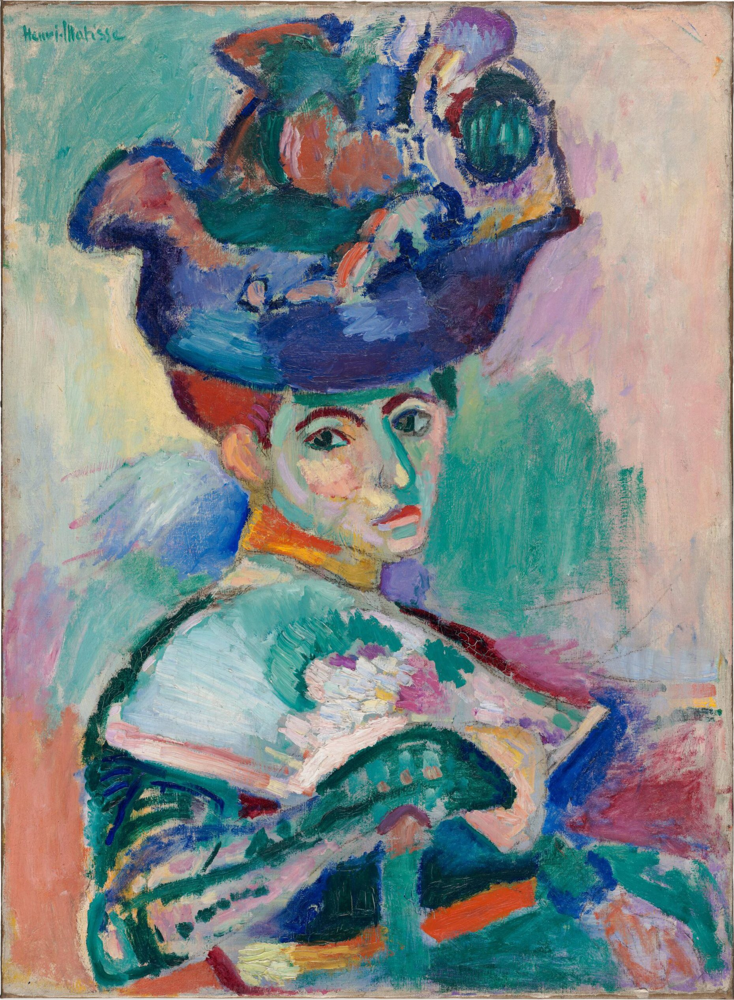

Henri Rousseau
Facts and interesting details about the self-taught painter, Henri Rousseau 🧘
Henri Rousseau was an unlikely revolutionary in the 19th-century Parisian art world. Working full-time as a toll and tax collector—earning him the permanent, slightly mocking nickname "Le Douanier" (the customs officer)—Rousseau had no formal art training. He began painting seriously only in his forties, guided purely by instinct and an obsession with drawing. While establishment critics routinely ridiculed his flattened perspectives, stiff anatomy, and seemingly childish proportions, avant-garde artists recognized a rare form of uncorrupted, primal genius.
Barred from exhibiting at the official, rigid Paris Salon controlled by the Académie des Beaux-Arts, Rousseau found his home at the Salon des Indépendants. Established with the motto "no jury, no awards," this radical exhibition allowed anyone to showcase their work for a small fee. It was here in 1905 that Rousseau debuted The Hungry Lion Throws Itself on the Antelope, alongside a group of groundbreaking young painters nicknamed the Fauves ("wild beasts"), a movement which would come to include painters such as Matisse and Derain. Though hung prominently, Rousseau's lush, unsettling dreamscape shocked conservative viewers, pushing the boundaries of what society considered legitimate art.


paintings by matisse
Rousseau, Matisse, and Picasso Compared
| Rousseau | Matisse | Picasso |
|---|---|---|
| Style: Naïve / Primitivism. Entirely self-taught with flat planes and fantastic, dreamlike proportions. | Style: Fauvism / Modernism. Master of intense, expressive, and non-naturalistic color blocks. | Style: Cubism / Avant-Garde. Pioneer of deconstructed geometric perspectives and form. |
| Inspiration: Parisian botanical gardens (Jardin des Plantes), taxidermy, and children's books. | Inspiration: North African textiles, light landscapes of Southern France, and traditional sculpture. | Inspiration: African tribal masks, Iberian sculpture, and Rousseau's raw, uncorrupted canvas style. |
| 1905 Salon Status: Shocked critics at the Salon des Indépendants with his massive jungle canvas. | 1905 Salon Status: Dubbed the leader of the "Fauves" (Wild Beasts) at the controversial Salon d'Automne. | 1905 Salon Status: Bypassed the traditional Salon system entirely, relying on private dealers and studios. |
| The Connection: Unwittingly became the eccentric cult hero and grandfather figure to the younger avant-garde. | The Connection: Picasso's lifelong friend and ultimate artistic rival; they constantly traded ideas and paintings. | The Connection: Bought Rousseau's work off the street and hosted the legendary 1908 banquet in his honor. |
| Legacy: Revered after death by Surrealists as a pure visionary who painted completely free from academic rules. | Legacy: Widely celebrated for liberating color from literal depiction, defining the decorative power of modern art. | Legacy: Redefined 20th-century artistic boundaries by constantly dismantling and reinventing styles, forms, and mediums. |